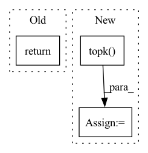

Pattern ID :38706
Before Change
// print("[DEBUG]: dst_pred: \n{};\n[DEBUG]: dst_gt: \n{};".format(dst_pred.detach().cpu().numpy(),
// dst_gt.detach().cpu().numpy()))
// ====================================== DEBUG ====================================== //
return n_candidate_loss + offset_loss
def inference(self,
feat_in: torch.Tensor,After Change
n_candidate_loss = F.binary_cross_entropy(tar_candit_prob, candidate_gt, reduction=reduction)
// classification loss in m selected candidates
_, indices = tar_candit_prob.topk( self.M, dim=1)
batch_idx = torch.vstack([torch.arange(0, batch_size, device=self.device) for _ in range(self.M)]).T
tar_pred_prob_selected = F.normalize(tar_candit_prob[batch_idx, indices], dim=-1)
candidate_gt_selected = candidate_gt[batch_idx, indices]
m_candidate_loss = F.binary_cross_entropy(tar_pred_prob_selected, candidate_gt_selected, reduction=reduction)In pattern: SUPERPATTERN
Frequency: 8
Non-data size: 3
Instances Fragment ID: 110665720
Project Name: henry1iu/tnt-trajectory-prediction
Commit Name: 16c7dbd5ff30f169d33bf95e78eb0a36634b93e3
Time: 2021-08-04
Author: liu.jb.henry@gmail.com
File Name: core/model/layers/target_prediction.py
M Class Name: TargetPred
N Class Name: TargetPred
M Method Name: loss(7)
N Method Name: loss(7)
M Parent Class: nn.Module
N Parent Class: nn.Module
M File Name: core/model/layers/target_prediction.py
N File Name: core/model/layers/target_prediction.py
M Start Line: 119
M End Line: 155
N Start Line: 119
N End Line: 160
Before Change
image_embed_dim = self.image_embed_dim
text_cond = self.get_text_cond(text)
return self.p_sample_loop((batch_size, image_embed_dim), text_cond = text_cond)
def q_sample(self, x_start, t, noise=None):
noise = default(noise, lambda: torch.randn_like(x_start))After Change
image_embeds = rearrange(image_embeds, "(b r) d -> b r d", r = num_samples_per_batch)
text_image_sims = einsum("b r d, b r d -> b r")
top_sim_indices = text_image_sims.topk(k = 1) .indices
top_sim_indices = repeat(top_sim_indices, "b 1 -> b d", d = image_embed_dim)
top_image_embeds = image_embeds.gather(1, top_sim_indices)
return top_image_embeds
def q_sample(self, x_start, t, noise=None): Fragment ID: 110665721
Project Name: lucidrains/dalle2-pytorch
Commit Name: d3cded3c6cd76eca7135f669a96658a244d0f49f
Time: 2022-04-13
Author: lucidrains@gmail.com
File Name: dalle2_pytorch/dalle2_pytorch.py
M Class Name: DiffusionPrior
N Class Name: DiffusionPrior
M Method Name: sample(3)
N Method Name: sample(2)
M Parent Class: nn.Module
N Parent Class: nn.Module
M File Name: dalle2_pytorch/dalle2_pytorch.py
N File Name: dalle2_pytorch/dalle2_pytorch.py
M Start Line: 413
M End Line: 413
N Start Line: 408
N End Line: 430
Before Change
def get_predicted(self, outputs):
_, predicted = torch.max(outputs.data, 1)
return predicted
def load_optimizer(self):
Load the optimizerAfter Change
def get_predicted(self, outputs):
probs = nnf.softmax(outputs.data, dim=1)
predicted_probs, predicted = probs.topk( 1, dim=1)
//_, predicted = torch.max(outputs.data, 1)
return predicted_probs, predicted.cpu().numpy()
def load_optimizer(self): Fragment ID: 110665725
Project Name: biasvariancelabs/aitlas
Commit Name: d4fd003817b3dc2fa73dbcc31b713b0328281175
Time: 2020-10-16
Author: ivica.dimitrovski@gmail.com
File Name: aitlas/base/classifiers.py
M Class Name: BaseMulticlassClassifier
N Class Name: BaseMulticlassClassifier
M Method Name: get_predicted(2)
N Method Name: get_predicted(2)
M Parent Class: BaseModel
N Parent Class: BaseModel
M File Name: aitlas/base/classifiers.py
N File Name: aitlas/base/classifiers.py
M Start Line: 199
M End Line: 200
N Start Line: 201
N End Line: 204
Before Change
// heat
print(distance_matrix)
return None
if __name__ == "__main__":After Change
// top k
distance_matrix = numpy_to_torch(distance_matrix)
top_k, index = torch.topk( distance_matrix, k)
top_k_min = torch.min(top_k, dim=-1).values.unsqueeze(-1).repeat(1, distance_matrix.shape[-1])
ones = torch.ones_like(distance_matrix)
zeros = torch.zeros_like(distance_matrix)
knn_graph = torch.where(torch.ge(distance_matrix, top_k_min), ones, zeros) Fragment ID: 110665727
Project Name: yueliu1999/awesome-deep-graph-clustering
Commit Name: 64e487fb89bfb4b04dc094d9f34ff837250eec12
Time: 2021-11-26
Author: 41297969+YueLiu-coder@users.noreply.github.com
File Name: dataset/utils.py
M Class Name: AnonimousClass
N Class Name: AnonimousClass
M Method Name: construct_graph(3)
N Method Name: construct_graph(3)
M Parent Class:
N Parent Class:
M File Name: dataset/utils.py
N File Name: dataset/utils.py
M Start Line: 88
M End Line: 106
N Start Line: 113
N End Line: 141
Before Change
for k in self.topk:
key = "{}@{}".format(metric, k)
metric_dict[key] = round(value[k - 1], 4)
return metric_dict
def _check_args(self):
After Change
scores_matrix = pad_sequence(scores_list, batch_first=True, padding_value=-np.inf) // nusers x items
// get topk
_, topk_index = torch.topk( scores_matrix, max(self.topk), dim=-1) // nusers x k
return topk_index
Fragment ID: 110665731
Project Name: rucaibox/recbole
Commit Name: df66b6285fec567d1f3ca0d6ee9d9ceb71f792b6
Time: 2020-10-20
Author: 1337990880@qq.com
File Name: recbole/evaluator/topk_evaluator.py
M Class Name: TopKEvaluator
N Class Name: TopKEvaluator
M Method Name: collect(4)
N Method Name: collect(3)
M Parent Class: AbstractEvaluator
N Parent Class: AbstractEvaluator
M File Name: recbole/evaluator/topk_evaluator.py
N File Name: recbole/evaluator/topk_evaluator.py
M Start Line: 69
M End Line: 80
N Start Line: 38
N End Line: 57
Before Change
target_size = targets.size()[1]
t_self_mask = utils.create_trg_self_mask(target_size,
device=targets.device)
return self.decode(targets, enc_output, i_mask, t_self_mask, t_mask)
def initialize(self):
// weight initAfter Change
encoder_padded_outputs, _ = self.encoder(padded_input, input_lengths)
pred, gold, *_ = self.decoder(padded_target, encoder_padded_outputs, input_lengths)
hyp_best_scores, hyp_best_ids = torch.topk( pred, 1, dim=2)
hyp_seq = hyp_best_ids.squeeze(2)
gold_seq = gold
Fragment ID: 110665733
Project Name: qute012/kosr
Commit Name: b7d24b0d835254fd425224eba3421a3b7224e55f
Time: 2021-01-12
Author: ejrwls012@gmail.com
File Name: model/transformer/transformer.py
M Class Name: Transformer
N Class Name: Transformer
M Method Name: forward(4)
N Method Name: forward(3)
M Parent Class: nn.Module
N Parent Class: nn.Module
M File Name: model/transformer/transformer.py
N File Name: model/transformer/transformer.py
M Start Line: 19
M End Line: 28
N Start Line: 18
N End Line: 34
Before Change
raise TypeError("n must be either an integer or a float")
counter = Counter(self.triples[:, 1])
return {
relation
for relation, _ in counter.most_common(n)
}After Change
raise TypeError("n must be either an integer or a float")
uniq, counts = self.mapped_triples[:, 1].unique(return_counts=True)
top_counts, top_ids = counts.topk(k=n, largest=True)
return set(uniq[top_ids].tolist())
def entities_to_ids(self, entities: Union[Collection[int], Collection[str]]) -> Collection[int]:
Normalize entities to IDs. Fragment ID: 110665735
Project Name: pykeen/pykeen
Commit Name: a007a273ff146107fd1b0c099d561c7b7279965a
Time: 2020-12-10
Author: berrendorf@dbs.ifi.lmu.de
File Name: src/pykeen/triples/triples_factory.py
M Class Name: TriplesFactory
N Class Name: TriplesFactory
M Method Name: get_most_frequent_relations(2)
N Method Name: get_most_frequent_relations(2)
M Parent Class:
N Parent Class:
M File Name: src/pykeen/triples/triples_factory.py
N File Name: src/pykeen/triples/triples_factory.py
M Start Line: 466
M End Line: 474
N Start Line: 595
N End Line: 597